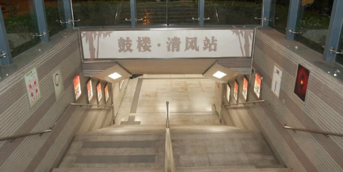
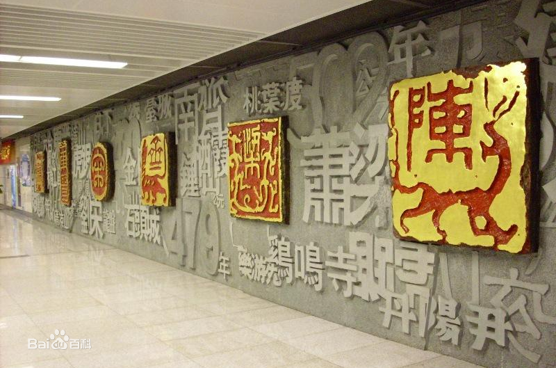
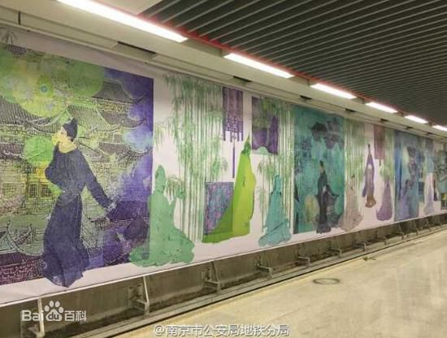
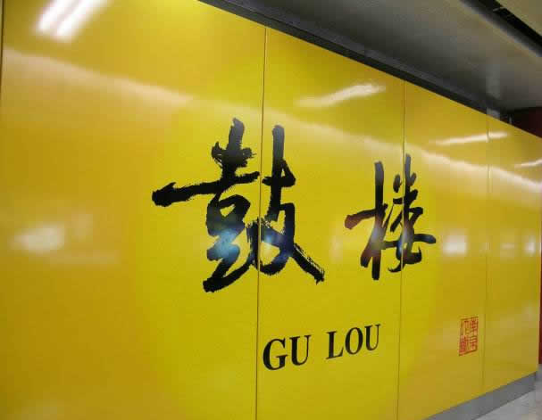

鼓楼站・清风车站  |
之所以起名叫“清风”车站是因为这是地铁公司和南京市纪委联合打造一个廉政文化主题车站。鼓楼站地处北京东路和北京西路交接处，东西两侧聚集省市党委政府等一大批机关单位，“清风”则寓意“清风廉洁”，地铁站内布设公益广告、书画等廉洁文化作品，意在全社会营造崇尚廉洁的氛围。 |
鼓楼站1号线车站文化艺术墙的主题为“六朝古都”，六枚铸铜朱红金印镶嵌在石墙中，上面分别用甲骨文、小篆等6种字体写了“东吴、东晋、宋、齐、梁、陈”曾以南京作为古都的朝代名称，印章汲取了中国古代龙虎肖形印之精华，表现了古都的特色。  鼓楼站4号线车站文化艺术墙的主题为“竹林七贤”，魏正始年间的嵇康、阮籍、山涛、向秀、刘伶、王戎及阮咸七人常聚在竹林之下，肆意酣畅，世谓竹林七贤。竹林七贤的作品基本上继承了建安文学的精神，他们崇尚老庄哲学，从虚无缥缈的神仙境界中去寻找精神寄托，用清谈、饮酒、佯狂等形式来排遣苦闷的心情，他们荒诞异行实为释私显公的表现，自我意识、精神的觉醒和提升。  |
地理位置
 |
出入信息
|